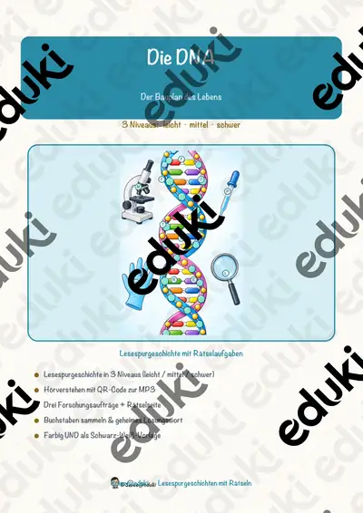
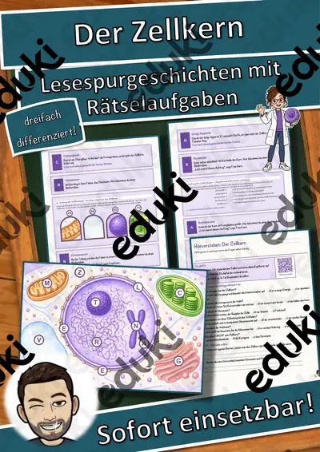
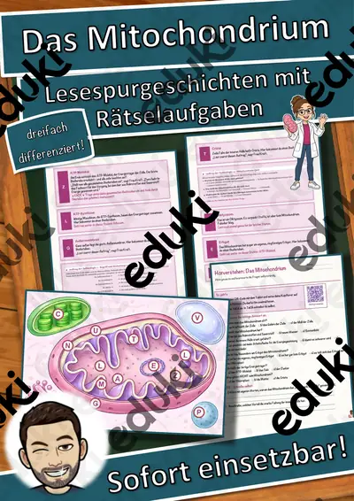
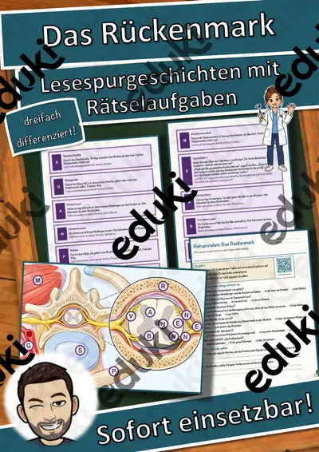
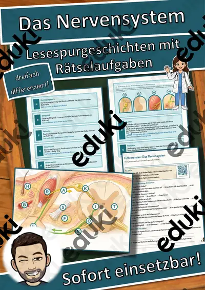
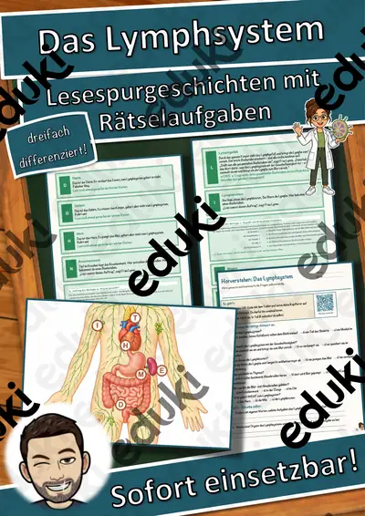
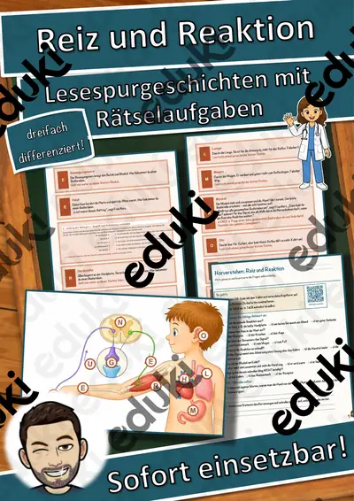

Die Arztpraxis – Ein Praktikum beim Arzt – Lesespurgeschichte mit Rätselaufgaben (Klasse 9)
Begib dich mit deiner Klasse auf eine spannende Lesespur durch eine Arztpraxis – als Praktikum im Gesundheitsberuf! Zwei Jugendliche begleiten die medizinische Fachangestellte Frau Sommer von der Anmeldung über das Wartezimmer, das Sprechzimmer und das Stethoskop bis zum Röntgengerät, zum Labor, zur Krankenakte und schließlich zum Arztgespräch – und lernen dabei den Ablauf einer Untersuchung und die Berufe im Gesundheitswesen kennen. Am Ende jedes Abschnitts verrät ein Hinweis den nächsten Ort auf dem Praxis-Plan – nur wer richtig liest und mitdenkt, findet den Weg und sammelt alle geheimen Buchstaben zum Lösungswort.
Diese Lesespurgeschichte verbindet motivierendes, sinnentnehmendes Lesen mit Sachwissen rund um Gesundheit und Beruf und eignet sich hervorragend für die Berufsorientierung. Das Material ist SOFORT EINSETZBAR und in DREI DIFFERENZIERUNGSSTUFEN (leicht ★ / mittel ★★ / schwer ★★★) angelegt, sodass alle Jugendlichen einer Klasse am selben Thema arbeiten können.WICHTIG: Das komplette Material ist sowohl in FARBE als auch in SCHWARZ-WEISS enthalten – ideal zum Sparen von Druckkosten. Die Darstellung ist sachlich und freundlich (ohne unangenehme Szenen).DAS IST ENTHALTEN
- Lesespurgeschichte in 3 Niveaus (leicht, mittel, schwer)
- farbiger Praxis-Plan als Suchkarte
- Hörverstehen mit QR-Code zur MP3 (selbstständiges Hören mit Kopfhörern)
- vier Aufträge auf dem Weg: ein Verbinde-Rätsel, ein Praxis-Quiz, eine Prozent-Rechenaufgabe und ein Steckbrief
- Rätselseite (Wörter-Suchsel + Wissensfragen)
- Ausmalbild zum Thema
- ausführliches Lösungsblatt für die Lehrkraft
- alles zusätzlich als komplette Schwarz-Weiß-VarianteSO FUNKTIONIERT DIE LESESPURDie Jugendlichen lesen ab START, entnehmen dem Text einen Hinweis auf einen Ort, suchen ihn auf dem Plan und lesen beim dort abgebildeten Buchstaben weiter. Eingebaute Sackgassen (Traktor, Fußball, Bohrmaschine, Kochtopf) dienen der Selbstkontrolle und machen deutlich, dass diese Dinge nicht in eine Arztpraxis gehören. Am Ende werden die gesammelten Buchstaben umgestellt und ergeben ein geheimes Lösungswort. (Die Lösungen sind selbstverständlich nur im Lösungsblatt für die Lehrkraft enthalten.)INHALTLICHER SCHWERPUNKTDer Ablauf eines Praxisbesuchs und die Berufe im Gesundheitswesen: Anmeldung und Versichertenkarte, Wartezimmer, Sprechzimmer und Anamnese, die Untersuchung mit dem Stethoskop, Röntgen, Labor, Krankenakte und Arztgespräch. Die Jugendlichen erfahren, wie aus vielen einzelnen Untersuchungen ein sicheres Ergebnis wird, und lernen Fachbegriffe wie Anamnese und Befund kennen. Das Material stellt die Zusammenhänge sachlich und jugendgerecht dar.ABGEDECKTER LEHRPLAN (Klasse 9, u. a. Mittelschule Bayern)
- Biologie / Gesundheit – Aufbau und Ablauf einer Arztpraxis, medizinische Untersuchungsmethoden, Gesundheit und Körper.
- Wirtschaft und Beruf (WiB) / Berufsorientierung – Berufe im Gesundheitswesen (z. B. medizinische Fachangestellte, Pflegefachkraft), Praktikumssituation, Schweigepflicht.
- Deutsch – Lesen mit Texten und Medien umgehen: Lesestrategien anwenden, Texten gezielt Informationen entnehmen, sinnentnehmend und selektiv lesen; Zuhören mit Hörverstehen (MP3).
- Mathematik – Prozentrechnung im Sachzusammenhang (Zahlen rund um die Praxis).
- Fächerübergreifend / Kompetenzen: Sachwissen, selbstständiges Arbeiten, genaues Lesen und Prüfen, Berufsorientierung.
Geeignet für Freiarbeit, Stationenlernen, Vertretungsstunden, Wochenplan, Berufsorientierung und Homeschooling. Klassenstufe 9 (differenziert einsetzbar auch in angrenzenden Jahrgangsstufen).
Ähnliche Materialien

Die DNA – Lesespurgeschichte mit Rätselaufgaben (Klasse 9)

Der Zellkern – Lesespurgeschichte mit Rätselaufgaben (Klasse 9)

Das Mitochondrium – Lesespurgeschichte mit Rätselaufgaben (Klasse 9)

Das Rückenmark – Lesespurgeschichte mit Rätselaufgaben (Klasse 9)

Die Bestäubung – Lesespurgeschichte mit Rätselaufgaben (Klasse 9)

Das Nervensystem – Lesespurgeschichte mit Rätselaufgaben (Klasse 9)

Das Lymphsystem – Lesespurgeschichte mit Rätselaufgaben (Klasse 9)
